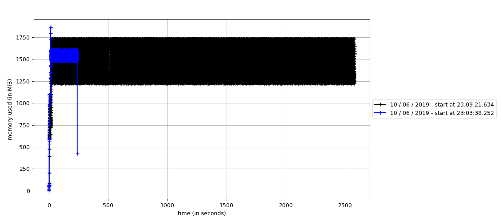
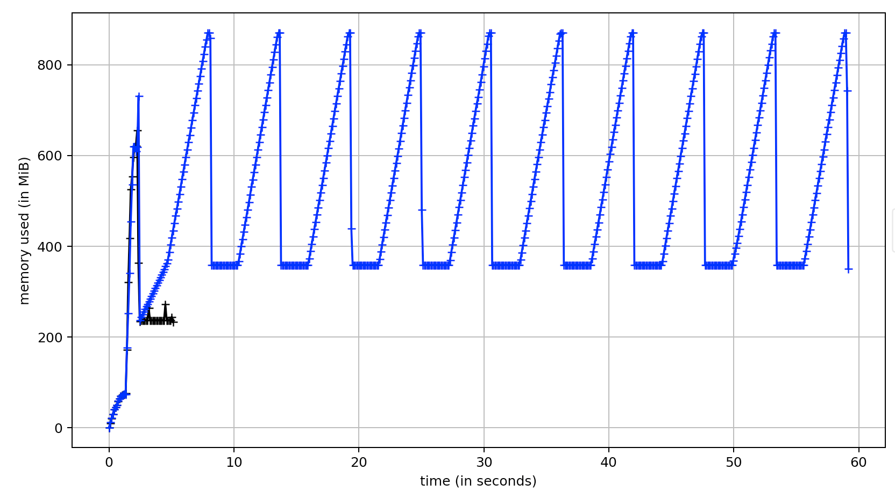
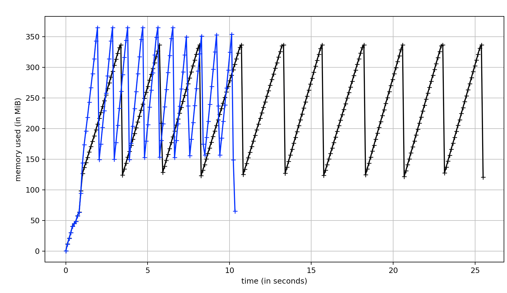
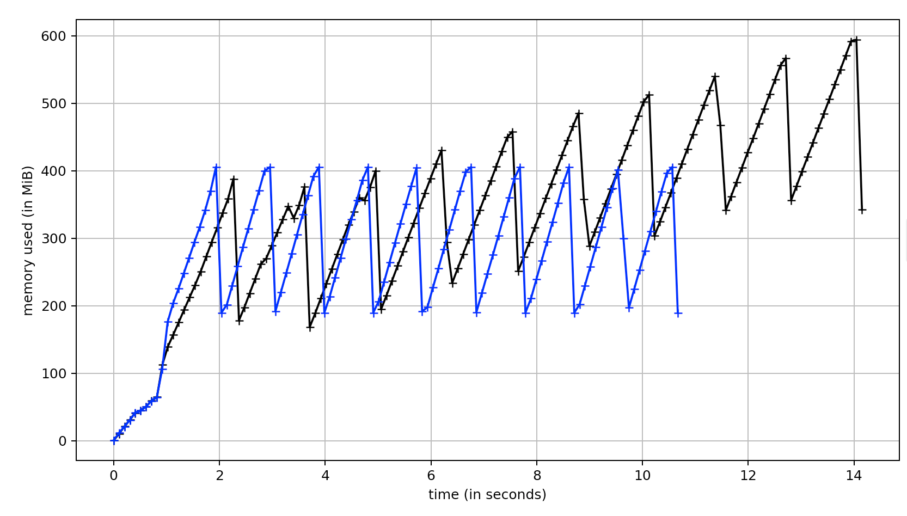
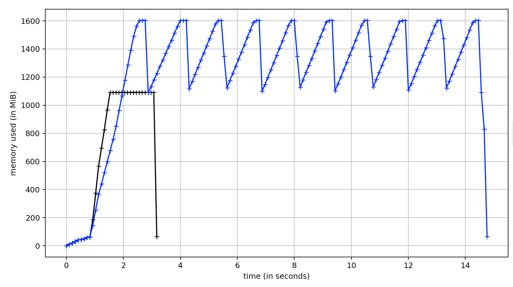
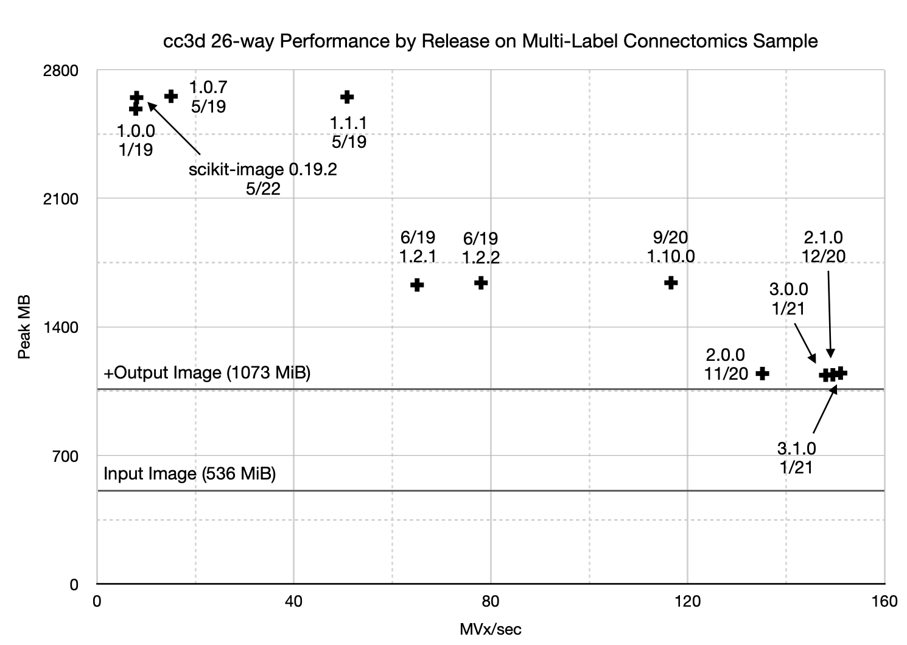
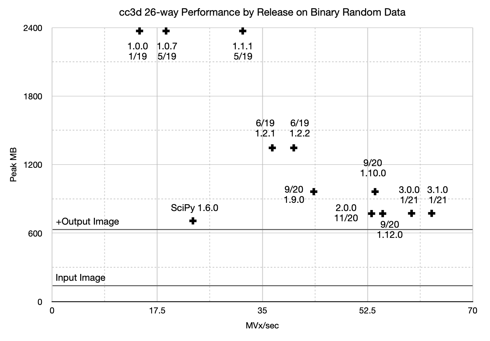
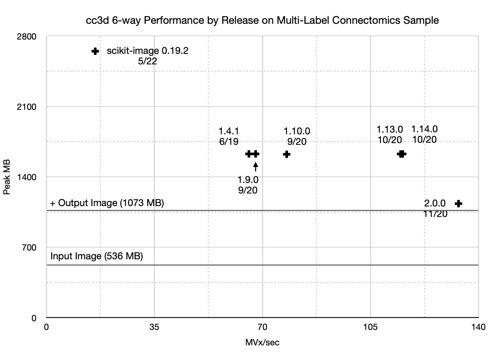

Benchmarks
Except where noted, these benchmarks were run on a 2.8 GHz Dual-Core Intel Core i7 with 1600 MHz DDR3 RAM. For binary images, we compared the performance of cc3d to the commonly used scipy.ndimage.measurements.label which supports 26-connected binary images. cc3d was designed to efficiently handle multilabel datasets.
Connectomics Data
Except where noted, we compared the time and memory performance of both libraries on connectomics.npy, a 512x512x512 voxel cutout of a dense segmentation of a connectomics dataset at a resolution of 32x32x40 nm3 containing 2523 labels and 3619 connected components.
The volume is derived from an early experimental segmentation of pinky40, a predecessor to the now public pinky100_v185 automatic segmentation of mouse brain now available at https://microns-explorer.org/phase1. You need to gzip decompress to recover the uncompressed file: gunzip connectomics.npy.ckl.gz
Image Data
Misc_pollen.npy is the microscopy image from https://en.wikipedia.org/wiki/Scanning_electron_microscope#/media/File:Misc_pollen.jpg which is a public domain photo taken by the Dartmouth College Electron Microscope Facility in 2004.
{kind=link}
Multi-Label Comparison
Fig. 1: Optimized extraction of components using cc3d 3.1.0 on a 512x512x512 densely labeled connectomics segmentation.

Fig. 2: Extraction of components on a 512x512x512 densely labeled connectomics segmentation. (black) scikit-image 0.19.2 and (blue) cc3d 3.10.0
import cc3d
import skimage.measure
from tqdm import tqdm
import numpy as np
def scikit_image_multilabel_extraction(labels):
res, N = skimage.measure.label(labels, return_num=True)
for segid in tqdm(range(1, N+1)):
extracted = (res == segid)
def cc3d_mutlilabel_extraction(labels):
res, N = cc3d.connected_components(labels, return_N=True)
for label, extracted in tqdm(cc3d.each(res, in_place=True), total=N):
pass
This is the fastest method we have for running CCL and then extracting each label from the result. CCL takes a fraction of a second, an index of the location of each shape is compiled, and then each shape is then drawn onto an output image and then erased before the next iteration of the loop. Compared with a pure scipy and numpy approach, this method is thousands of times faster if a full sized image is required. Scipy/numpy can perform much better if scipy.ndimage.find_objects and cropping is employed.
The memory usage is higher here compared with the figure below due to the size of the location index.

Fig. 2: Extracting components using SciPy vs cc3d on a 512x512x512 densely labeled connectomics segmentation. (black) 20% of SciPy 1.3.0 (blue) 100% of cc3d 1.2.2
import cc3d
from tqdm import tqdm
import scipy.ndimage.measurements
import numpy as np
import fastremap
def cc3d_test(labels):
labels, remap = fastremap.renumber(labels)
res = cc3d.connected_components(labels)
N = np.max(res)
for segid in tqdm(range(1, N+1)):
extracted = (res == segid)
def ndimage_test(labels):
s = [
[[1,1,1], [1,1,1], [1,1,1]],
[[1,1,1], [1,1,1], [1,1,1]],
[[1,1,1], [1,1,1], [1,1,1]]
]
uniques = np.unique(labels)[1:]
for segid in tqdm(uniques):
extracted = (labels == segid)
res, N = scipy.ndimage.measurements.label(extracted, structure=s)
for ccid in tqdm(range(1,N+1)):
extracted = (res == ccid)
This benchmark was run an x86_64 3.7 GHz Intel Core i7-4820K CPU @ 3.70GHz with DDR3 1600 MHz RAM.
In this test, cc3d_test was run to completion in 225 seconds after loading the image and processing it. ndimage_test was arrested manually after 496 iterations (20%) at 2,745 seconds as tqdm projected over three hours of total running time. SciPy's algorithm wins on memory pressure at about 1.7 GB peak usage versus cc3d using about 1.8 to 1.9 GB. SciPy performs poorly here because it must be run thousands of times after masking to expose individual labels since it only supports binary data. SciPy's average iteration per label takes about 5.1 sec. It then must extract the individual components from the results of connected components, but this is fast. By contrast, since cc3d has native multi-label support, it needs to only be run once, with the bulk of time spent querying the resulting image for components.
10x Head to Head: Connectomics Data

Fig. 3: SciPy vs cc3d run ten times on a 512x512x512 connectomics segmentation masked to only contain one label. (blue) SciPy 1.6.0 (black) cc3d 3.1.0
import cc3d
from tqdm import tqdm
import scipy.ndimage.measurements
import numpy as np
labels = ...
labels == labels == 28792756
s = [
[[1,1,1], [1,1,1], [1,1,1]],
[[1,1,1], [1,1,1], [1,1,1]],
[[1,1,1], [1,1,1], [1,1,1]]
]
for i in tqdm(range(10)):
# cc3d.connected_components(labels)
scipy.ndimage.measurements.label(labels, structure=s)
This comparison was performed to show what happens when SciPy and cc3d are run on realistic single-label data. cc3d performs each iteration in 0.27 seconds while SciPy takes about 5.7 seconds. While in previous versions, cc3d used many times more memory than scipy in this experiment, as of version 2.0.0, the memory usage is now better than SciPy due to estimating the necessary number of provisional labels before executing.
| Trial | MVx/sec | Rel. Perf. |
|---|---|---|
| SciPy 1.6.0 | 23.7 | 1.00x |
| cc3d 3.1.0 | 502.5 | 21.2x |
10x Head to Head: Random Binary Images
import numpy as np
import scipy.ndimage.measurements
import cc3d
s = [
[[1,1,1], [1,1,1], [1,1,1]],
[[1,1,1], [1,1,1], [1,1,1]],
[[1,1,1], [1,1,1], [1,1,1]]
]
labels = np.random.randint(0,2, size=(384, 384, 384), dtype=np.bool)
for label in labels:
# scipy.ndimage.measurements.label(label, structure=s) # black
cc3d.connected_components(label) # blue
26-connected

Fig. 4: SciPy vs cc3d run ten times on a 384x384x384 random binary image. (black) SciPy 1.6.0 (blue) cc3d 3.1.0
On random binary images, SciPy marginally wins on memory with a peak memory cosumption of 337 MB vs. cc3d with a peak consumption of about 363 MB (1.08x). However, SciPy doesn't perform as well as cc3d in running time with an average run time of 2.45 sec versus 0.92 sec per label set.
| Trial | MVx/sec | MB/sec | Rel. Perf. |
|---|---|---|---|
| SciPy 1.6.0 | 23.1 | 23.1 | 1.0x |
| cc3d 3.1.0 | 61.7 | 61.7 | 2.6x |
6-connected

Fig. 4: SciPy vs cc3d run ten times on a 384x384x384 random binary image using 6-connectivity. (black) SciPy 1.5.2 (blue) cc3d 1.13.0
SciPy uses about 390 MB, which is oddly increasing, while cc3d uses 405 MB. SciPy averages 1.31 seconds per volume vs cc3d averages 0.95 seconds per volume.
| Trial | MVx/sec | MB/sec | Rel. Perf. |
|---|---|---|---|
| SciPy 1.5.2 | 43.4 | 43.4 | 1.0x |
| cc3d 1.13.0 | 59.9 | 59.9 | 1.4x |
10x Head to Head: Black Cube

Fig. 4: Different configurations run against a uint64 512x512x512 black cube using 26-connectivity. (blue) SciPy 1.6.0 (black) cc3d 3.1.0
Sometimes empty data shows up in your pipeline. Sometimes a lot of it. How do your libraries handle it? At full speed? Slower? Faster than normal?
Here we show scipy versus cc3d using 26 connectivity. cc3d will skip the relabeling pass if provisional labels total fewer than two. It will also skip the decision tree pass and memory allocation of data structures as well if it estimates zero provisional voxels.
We can see how this bears out. In black, SciPy runs at a brisk and reasonable clip. In data not shown, it appears to have some optimization for black voxels as it runs more slowly on a solid color non-zero cube. cc3d skips everything except the scan for foreground labels.
| Trial | MVx/sec | Rel. Perf. |
|---|---|---|
| SciPy 1.6.0 | 102 | 1.0x |
| cc3d 3.1.0 | 923 | 9.0x |
Historical Performance
cc3d has been steadily improving over time. To celebrate the release of 2.0.0, we show plots of peak memory usage and megavoxels per second vs version. Better scores in these charts trend down and right, indicating lower peak memory pressure and faster execution. In May 2022, I discovered that scikit-image also is multi-label capable and so added comparisons to these charts.

Fig. 6: 26-way cc3d peak memory usage and speed in selected releases against a 512x512x512 connectomics dataset.

Fig. 7: 26-way cc3d and scipy peak memory usage and speed in selected releases against a 512x512x512 random binary dataset.
Fig. 8: 26-way cc3d peak memory usage and speed against a natural binary image from a 512x512x512 connectomics dataset.

Fig. 9: 6-way cc3d peak memory usage and speed in selected releases against a 512x512x512 connectomics dataset.